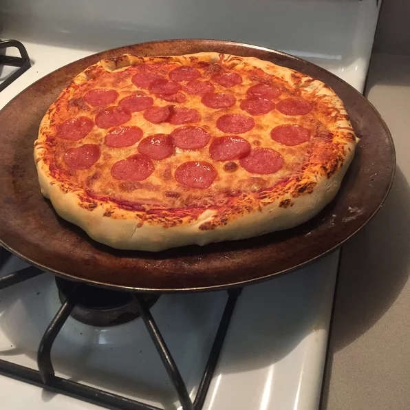

Back to homepage
Pizza Recipe 1

Description
This recipe contains how to make the sauce, crust and what toppings to use and is enough for 6 servings
Ingredients
Sauce:
- ½ (12 ounce) can CONTADINA® Tomato Paste
- 1 teaspoons dried oregano, crushed
- 1 teaspoons dried basil, crushed
- ½ teaspoon garlic powder
- ½ teaspoon onion powder
- ½ teaspoon sugar
- ½ teaspoon salt
- ¼ teaspoon black pepper
Crust:
- 3 ¼ cups all-purpose flour, or more as needed
- 2 (.25 ounce) envelopes FLEISCHMANN'S® Pizza Crust Yeast or RapidRise® Yeast
- 1 tablespoon sugar
- ½ tablespoon salt
- 1 ⅓ cups very warm water (120 degrees F to 130 degrees F)
- ¼ cup and 1 tablespoon and 1 teaspoons oil
Toppings:
- 1 (6 ounce) package HORMEL® Pepperoni
- 1 cups shredded mozzarella cheese, or more to taste
Steps
- For sauce: Combine all sauce ingredients with 1/2 cup water in a medium bowl; set aside for flavors to develop while making crust. Freeze remaining paste.
- For crusts: Combine 2 cups of flour with the dry yeast, sugar and salt. Add the water and oil and mix until well blended (about 1 minute). Gradually add enough remaining flour slowly, until a soft, sticky dough ball is formed.
- Knead for about 4 minutes, on a floured surface, until dough is smooth and elastic. Add more flour, if needed. (If using RapidRise® Yeast, let dough rest, covered, for 10 minutes.)
- Divide dough in half. Pat each half (with floured hands) into a 12-inch greased pizza pan OR roll dough to fit pans.
- For pizzas: Preheat oven to 425 degrees F. Top crusts with sauce, pepperoni and cheese.
- Bake for 18 to 20 minutes until crusts are browned and cheese is bubbly. For best results, rotate pizza pans between top and bottom oven racks halfway through baking.